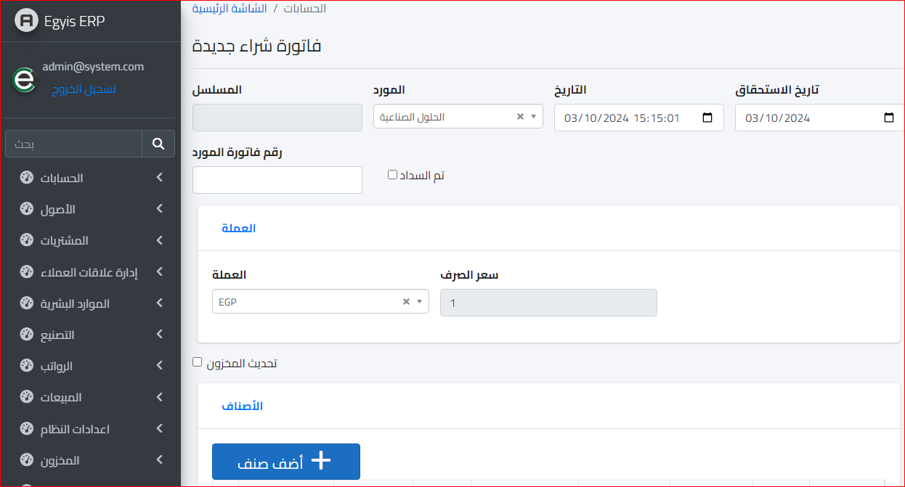
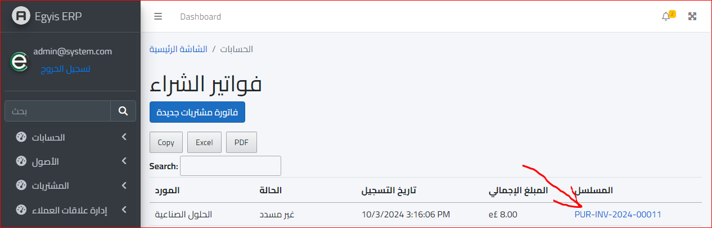
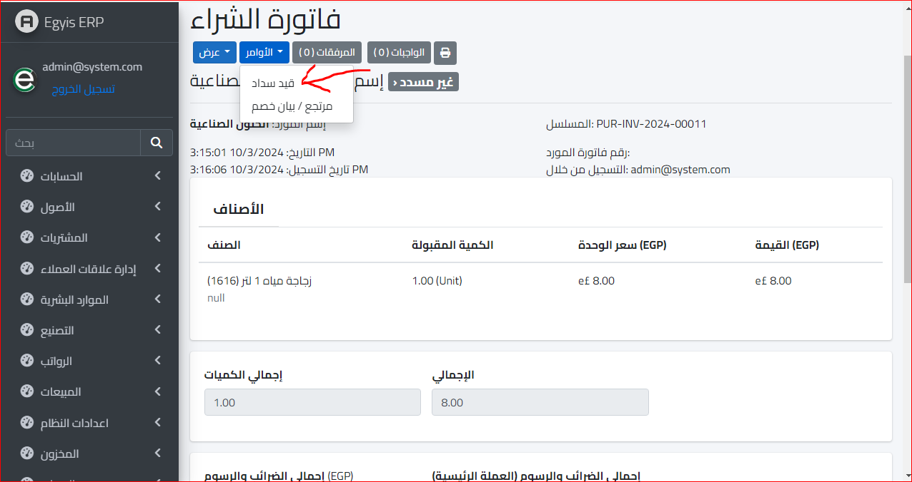

فاتورة شراء
يتم النقر على قائمة تسجيل واختيار فاتورة شراء لتظهر بالشكل التالي :
نقوم بالنزول للأسفل والنقر على زر حفظ لتظهر الشاشة التالية :
وهنا قد تم الانتهاء من عمل فاتورة الشراء وتم تسجيلها ونلاحظ أن حالتها غير مسدد حيث لم يتم عمل قيد سداد بعد
اما اذا اردنا ان نسجل قيد سداد لهذه الفاتورة ويتم النقر على مسلسل الفاتورة كما هو موضح بالشاشة السابقة لتظهر لنا الشاشة التالية :
